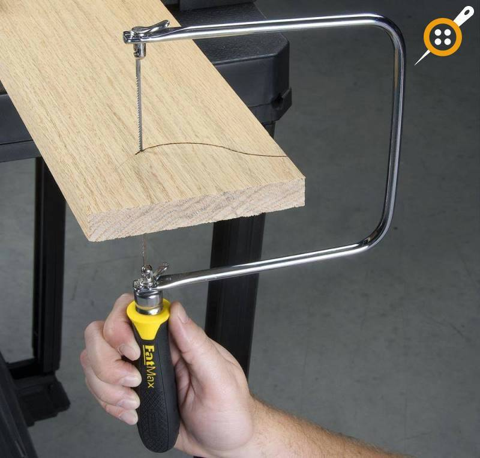
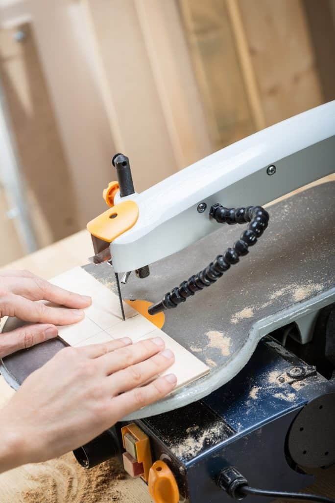

- Yazdırmak için ücretsiz kaydırma testere desenleri arıyorsanız, doğru yere geldiniz! Kaydırma testere desenleri için ödeme yapmak için hiçbir neden yoktur.
- Kaydırma testere projeleri, orada en ödüllendirici ve iyi görünümlü ahşap işleme projeleridir.
- Kaydırma testere desenlerinin karmaşık veya gerçekten basit olabileceğini seviyoruz. 2D olabilirler veya 3D projeler de yapabilirsiniz.
- Basit kaydırma testere projeleri, bir matkap ve diğer el aletlerini kullanmaktan rahat olan ve güvenliği ve elektrikli testerelerin nasıl kullanılacağını öğrenmeye hazır olan çocuklar için harika bir tanıtımdır.
- Size ve hissedebildikleri başarı duygusu inanılmaz!
- Özellikle bu dijital çağda, çocuklarımızı (kendimiz !!) birkaç dakika ekranlardan uzak tutmaya ve kullanışlı ve pratik bir beceri öğrenmeye çalıştığımız zaman.
- Kaydırma Testerelerini henüz bilmiyorsanız, burada Kaydırma Testere Kılavuzumuzu okumanızı öneririz !

- POCKET STUFF DISH SCROLL SAW PATTERN

- BAMBOO TRIPTYCH

- FISH COME IN THREE SIZES

- COLLECTION OF HANDS FROM LONG CASE CLOCKS

- SCROLL SAW WALL SHELF PLAN

- SCROLL SAW BOX